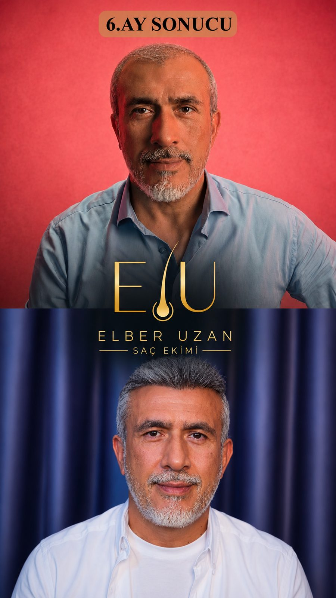
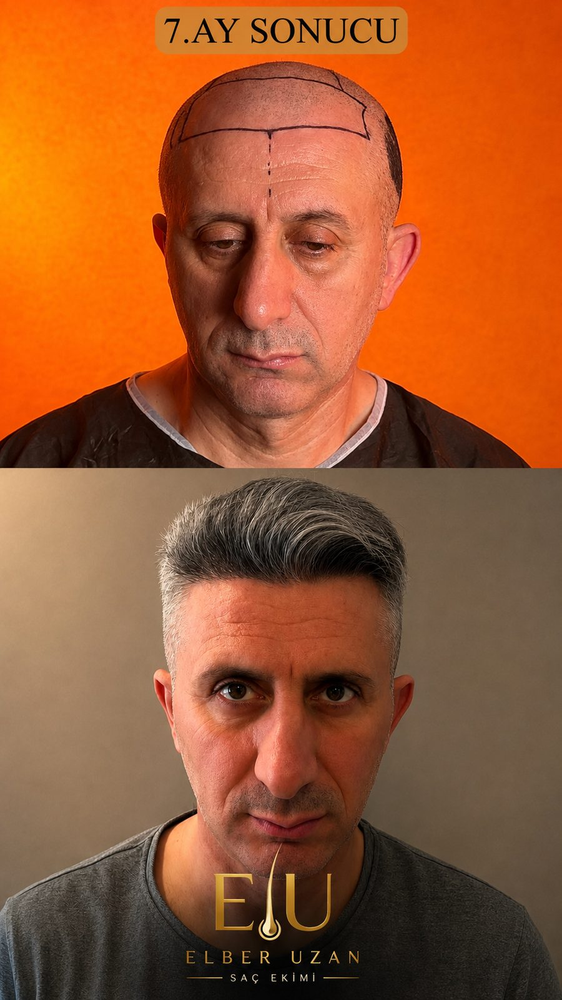
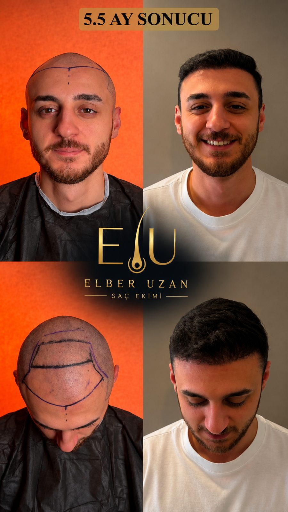
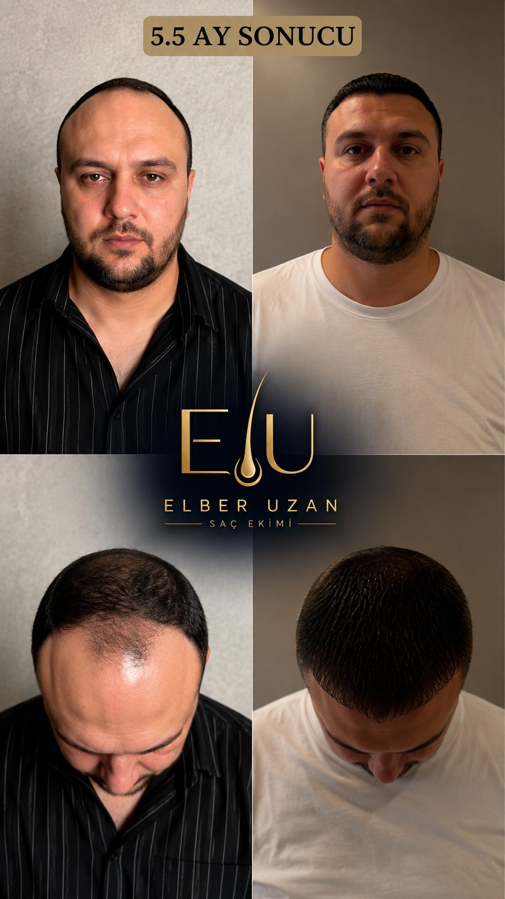
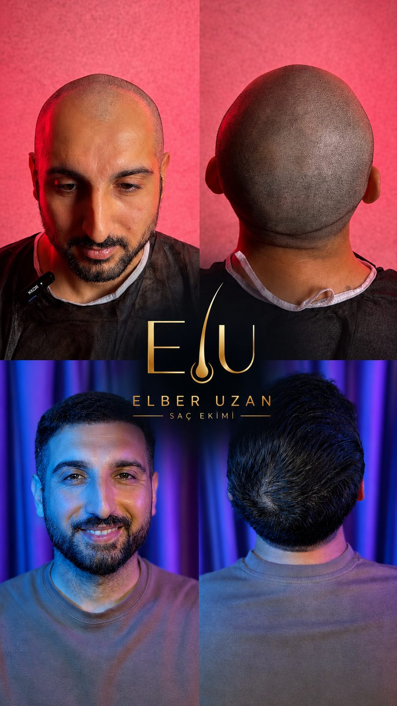
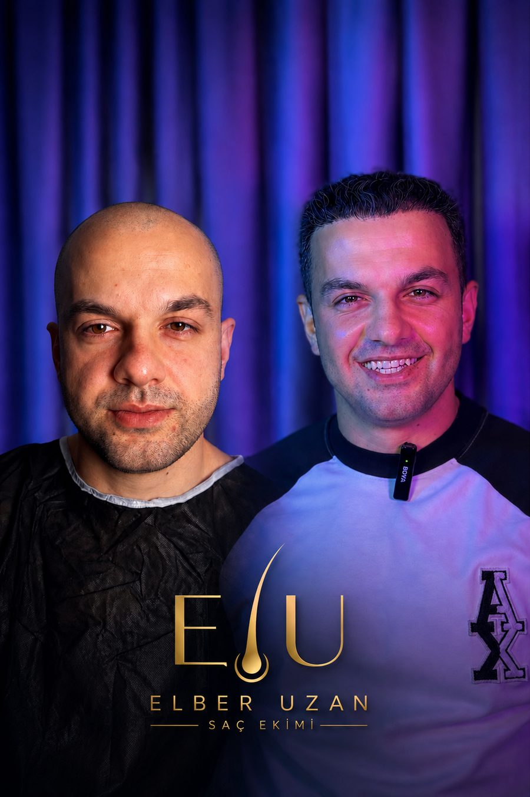

Saç Ekimi · Medikal Saç Tedavileri · Yüz Gençleştirme
Yeniden kendiniz gibi görünün.
Doktor kontrolünde. Kendi ekibimiz, kendi ekipmanımız.
Saç ekimi bir görünüm değişikliği değil, uzun yıllar yaşayacağınız
bir karardır. Bu yüzden bizde her şey aynı yerden başlar: sizi tanımaktan,
ölçmekten ve gerçekçi olanı söylemekten.
I
Neden bizGörünmeyen tarafı görünür yapmak
II
Saç ekimiFUE ve DHI · işlem günü
III
Medikal saç tedavileriPRP · mezoterapi · exosome
IV
Yüz gençleştirmeSomon DNA
V
Ayrıcalıklı hizmetBulunduğunuz yerde uygulama
VI
DeneyimimizÜç kıta, altı ülke
VII
SonuçlarımızHastalarımızdan
INeden Biz
Bu işte en önemli soru şudur: karşınızdaki kim?
Saç ekimi yaptıracak birinin asıl korkusu fiyat değildir — kötü bir
sonuçla yıllarca yaşamak zorunda kalmaktır. Biz bu yüzden işin görünmeyen
tarafını görünür yapıyoruz.
Sorumluluk
Planlama ve uygulama hekim sorumluluğundadır. İşlemi kimin yaptığı
belirsiz kalmaz.
Ekip
Dışarıdan ekip kiralamıyoruz. Aynı ekip, aynı standart, her hastada.
Sterilizasyon
Her hasta için yeni set açılır — üstelik sizin gözünüzün önünde.
Planlama
Herkese aynı paket uygulanmaz. Saç analizi yapılmadan işlem planı
çıkarılmaz.
Takip
Operasyon bittiğinde ilişki bitmez. İyileşme boyunca ulaşabileceğiniz
bir muhatabınız olur.
Uluslararası
Üç kıtadan gelen hastalarla çalışıyoruz; süreci uzaktan yönetmeye
alışkınız.
IIAna Hizmetimiz
Saç Ekimi
Saç ekimi saçınızı yeniden yaratmak değildir. Dökülmeye dirençli
kendi köklerinizi, seyrelen bölgeye taşımaktır. Yani ektiğimiz saç, sizin
kendi saçınızdır.
Ense ve kulak üstündeki kökler, saç dökülmesine yol açan hormonal
etkiye genetik olarak dirençlidir. Alnınıza taşındığında da bu direnci
korurlar — yeni yerinde de dökülmezler. Saç ekiminin kalıcı olmasının sebebi
budur.
Yöntem bir
FUE
Nedir
Kökler mikro uçlarla tek tek alınır ve açılan kanallara yerleştirilir.
Dikiş izi bırakmaz, iyileşme hızlıdır.
Kime uygun
Ön saç çizgisi gerilemiş, tepe bölgesi açılmış, geniş alan ekimi
gereken kişiler.
Yöntem iki
DHI — Kalemle doğrudan ekim
Nedir
Özel kalem (Choi implanter) ile kanal açma ve yerleştirme tek adımda
yapılır. Kökün dışarıda kaldığı süre kısalır, çıkış açısı daha hassas
ayarlanır.
Kime uygun
Sıklaştırma isteyenler, mevcut saçların arasına ekim yapılacak durumlar
ve ön saç çizgisinin doğallığının kritik olduğu planlamalar.
İşlem günü nasıl geçer?
Bir
Muayene ve saç analiziDökülme tipiniz, kök yoğunluğunuz ve ekilecek alan ölçülür. Kaç köke
ihtiyacınız olduğu tahminle değil ölçümle belirlenir.
İki
Saç çizgisi tasarımıYüz hatlarınıza ve yaşınıza uygun ön saç çizgisi birlikte çizilir.
Siz onaylamadan işleme başlanmaz.
Üç
Lokal anesteziBölge uyuşturulur. İşlem boyunca ağrı hissetmezsiniz; uyutulmazsınız.
Dört
Köklerin alınmasıDonör bölgeden kökler tek tek alınır ve özel solüsyonda korunur.
Beş
EkimKökler doğal çıkış açısına uygun yerleştirilir. Doğal görünümü
belirleyen asıl aşama budur.
Altı
Bakım ve takipİlk yıkama, kullanacağınız ürünler ve dikkat edilecekler anlatılır;
süreç boyunca iletişimde kalırız.
Ekilen saçlar ilk haftalarda dökülür. Bu normaldir ve kökün kaybı
anlamına gelmez. Çıkış üçüncü aydan itibaren başlar, sonuç sekiz ile on iki ay
arasında oturur. Size bir gecede sonuç vaat eden hiç kimseye inanmayın.
IIIMedikal Saç Tedavileri
Saç ekimi tek başına yeterli olmayabilir.
Ekim, açılan bölgeyi doldurur. Mevcut saçınızın korunması ve saçlı
derinizin sağlıklı olması ise ayrı bir iştir. Aşağıdaki tedaviler hem tek
başına hem de ekimin destekleyicisi olarak uygulanır.
Tedavi bir
PRP
Nedir
Sizden alınan az miktarda kan özel bir cihazda ayrıştırılır; trombositten
zengin plazma elde edilir ve saçlı deriye mikro enjeksiyonlarla verilir.
Ne işe yarar
Trombositlerin taşıdığı büyüme faktörleri saç kökünün beslenmesini ve
canlanmasını destekler. Ekim sonrası iyileşme döneminde de sıkça tercih
edilir.
Neden güvenli
Uygulanan madde sizin kendi kanınızdır. Dışarıdan yabancı madde
verilmediği için alerjik reaksiyon riski düşüktür.
Tedavi iki
Saç mezoterapisi
Nedir
Saç köküne fayda sağlayan vitamin, mineral, amino asit ve iz elementlerden
oluşan karışımın saçlı deriye mikro enjeksiyonla verilmesidir.
Ne işe yarar
Kökün ihtiyacı olan besini doğrudan bölgeye ulaştırır; saçlı derideki kan
dolaşımını ve kök beslenmesini destekler.
Kime uygun
Dökülmenin erken evresindeki, saçı incelmeye başlamış ve henüz ekim
gerekmeyen kişiler için ilk adımdır.
Tedavi üç
Exosome
Nedir
Exosome'lar, hücrelerin birbirine sinyal göndermek için kullandığı çok
küçük keseciklerdir; içlerinde hücre yenilenmesini yönlendiren haberci
moleküller taşırlar.
Ne işe yarar
Saç kökü çevresindeki hücrelere yenilenme sinyali taşıyarak kökün
canlanmasını destekler. Seans sayısı genellikle diğer yöntemlere göre
daha azdır.
Nasıl planlanır
Hastanın durumuna göre tek başına ya da PRP ile birlikte uygulanır.
IVYüz Gençleştirme
Somon DNA
Saç kadar dikkat çeken bir başka şey var: cildin kendisi. Somon DNA,
cildi doldurarak değil, onararak gençleştiren bir uygulamadır.
Uygulama
Polinükleotid tedavisi
Nedir
Somon balığından elde edilen ve insan DNA'sıyla yüksek uyum gösteren
polinükleotid moleküllerinin, cilde mikro enjeksiyonlarla verilmesidir.
Ne işe yarar
Cildin kendi onarım mekanizmasını ve nem tutma kapasitesini destekler.
Zamanla cilt tonu, esneklik ve doku kalitesinde iyileşme hedeflenir.
Hangi bölgeler
Yüz, göz çevresi, boyun ve el sırtı gibi incelmenin ve kuruluğun en
erken göründüğü bölgeler.
Dolgu hacim ekler ve şekil değiştirir. Somon DNA hacim eklemez;
cildin kendi kalitesini iyileştirmeyi amaçlar. Bu yüzden "yaptırdım" değil,
"dinlenmiş görünüyorsun" denen türden bir değişim yaratır.
Hangi tedavinin size uygun olduğu muayene sonrasında belirlenir.
Herkese aynı paket uygulanmaz — gerekmeyen bir tedaviyi size satmayız.
VAyrıcalıklı Hizmet
Siz bize gelmeyin. Biz size gelelim.
Seans gerektiren tedavilerimizi — PRP, mezoterapi, exosome ve somon
DNA — bulunduğunuz yerde uyguluyoruz: evinizde, iş yerinizde ya da otelinizde.
Randevu
Size göre ayarlanır. Mesainizden çalmaz; akşam veya hafta sonu
planlanabilir.
Ekipman
Cihazlar, uygulama setleri ve steril malzeme bizimle gelir. Sizden
hiçbir şey istenmez.
Sterilizasyon
Her hastada yeni, tek kullanımlık set. Paketler uygulama sırasında
önünüzde açılır.
Atık
Tıbbi atık bizimle gider. Uygulama sonrası ortamda hiçbir iz kalmaz.
Mahremiyet
Bekleme salonu yok, karşılaşma yok. Tedavi gördüğünüzü yalnızca siz
bilirsiniz.
Saç ekimi cerrahi bir işlem olduğu için yalnızca uygun klinik
ortamında yapılır. Bu bizim tercihimiz değil, güvenliğin şartıdır — ve size
bunu evde teklif eden hiç kimseye güvenmeyin.
VIDeneyimimiz
Hastalarımız üç kıtadan geliyor.
Yurt dışından gelen bir hasta için süreç uçak biletiyle başlamaz;
aylar önce gönderilen bir fotoğrafla başlar. Ön değerlendirme, planlama,
konaklama, işlem ve dönüş sonrası takip — hepsini uzaktan yürütmeye alışkınız.
AlmanyaAvrupa
BelçikaAvrupa
HollandaAvrupa
Birleşik Arap Emirlikleri · DubaiOrta Doğu
Fas · RabatAfrika
Türkiye · İstanbulMerkez
3Kıta
6Ülke
İstanbulOperasyon merkezi
VIISonuçlarımız
Hastalarımızdan.

Altıncı ay

Yedinci ay

Beş buçuk ay · ön ve üst görünüm

Beş buçuk ay · ön ve üst görünüm

Ön ve arka görünüm

Öncesi ve sonrası
Görseller, izinleri alınarak paylaşılan gerçek hastalarımıza
aittir. Sonuçlar kişiden kişiye değişir.
İlk Adım
Önce konuşalım. Kararı sonra verirsiniz.
Saçınızın fotoğrafını gönderin, ön değerlendirmeyi ücretsiz yapalım.
Size uygun yöntemi, gerçekçi beklentiyi ve süreci anlatalım — hiçbir şey satın
almak zorunda değilsiniz.
WhatsApp
0531 308 02 09
Telefon
0541 437 19 07
E-posta
elberuzan@outlook.com
Adres
İstanbul · Ataşehir
Bu katalogdaki bilgiler tanıtım amaçlıdır ve tıbbi tavsiye
yerine geçmez. Uygulanacak tedavi, muayene sonrasında hekim tarafından
belirlenir. · AYZENITH · Elber Uzan Saç Ekimi